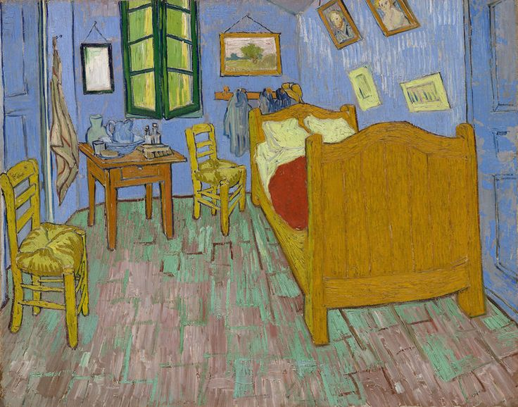

Unlocking the Colors of Dreams: Van Gogh's "The Bedroom"
Vincent van Gogh's "The Bedroom" is not merely a depiction of an interior space; it is a vibrant exploration of color, emotion, and the artist's deep connection to his surroundings. Painted in 1888, this masterpiece offers a unique window into the restless mind of one of art history's most celebrated figures.
The Sanctuary of Sleep:
The bedroom served as a recurring subject in van Gogh's body of work, and in this particular piece, the room becomes a sanctuary of both tranquility and turmoil. The simplicity of the composition is deceptive, for it conceals a profound emotional depth.
The Palette of Dreams
What immediately strikes the viewer is the bold and expressive use of color. Van Gogh, known for his dynamic and emotionally charged palette, transforms the mundane into the extraordinary. The walls of the bedroom are awash in calming shades of blue, while the wooden furniture and floorboards provide a warm contrast in hues of amber and ochre.
The colors seem to dance and vibrate, creating a sense of movement within the confines of the canvas. Van Gogh's ability to infuse static objects with such vitality is a testament to his mastery of color theory.
Symbolism in Simplicity
Beyond the aesthetic allure, "The Bedroom" carries layers of symbolism. The intimate space becomes a reflection of van Gogh's inner world – a place of solace and reflection amidst the turbulence of his personal life. The simplicity of the room is deceptive; it conceals the artist's complex emotional landscape.
The choice of three versions of the painting, each with subtle variations, adds another layer of intrigue. Van Gogh's desire to create multiple versions of the same subject speaks to his quest for perfection and the elusive nature of capturing a moment's essence.
Influences and Legacy
"The Bedroom" reflects van Gogh's admiration for Japanese woodblock prints, evident in the flat, decorative quality of the composition. The synthesis of Western and Eastern artistic influences is a testament to the artist's eclectic tastes and his openness to a wide range of cultural expressions.
The legacy of "The Bedroom" extends far beyond the canvas. Its impact can be seen in the work of later artists who were inspired by van Gogh's bold use of color and his ability to transform the ordinary into the extraordinary.
Conclusion:
Vincent van Gogh's "The Bedroom" invites us into a space that transcends the physical confines of the canvas. It is a testament to the artist's ability to find beauty in simplicity and to convey complex emotions through the language of color. As we step into this sacred space, we are reminded of the timeless power of art to capture the essence of the human experience.
In the words of van Gogh himself, "I dream of painting and then I paint my dream.